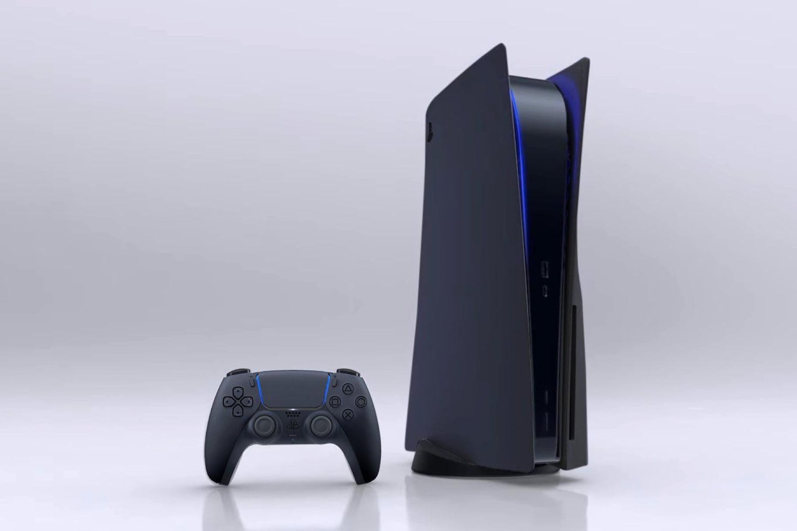
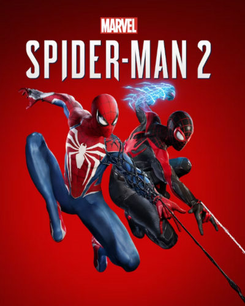
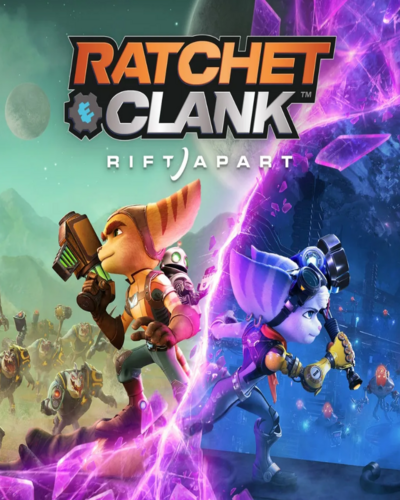
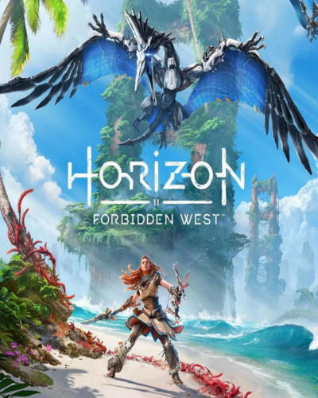

Последней на данный момент консолью является PlayStation 5, выпущенная в 2020 году. Она сталадоступна в двух версиях: стандартной с дисководом и цифровой без дисковода. PlayStation 5 предлагаетулучшенную производительность, поддержку 4K и инновационный контроллер DualSense, который предоставляетновую тактильную обратную связь. Консоль продолжает пользоваться популярностью, а ее игры, такие как"Demon's Souls" и "Ratchet & Clank: Rift Apart", получили высокую оценку критиков.
Sony Playstation
КРАТКАЯ ИСТОРИЯ КОНСОЛИ
История консолей Sony PlayStation началась в начале 1990-х годов. Первоначально Sony работала над совместным проектом с Nintendo для создания CD-привода для консоли Super Nintendo. Однако в 1991 году сотрудничество распалось, и Sony решила развивать собственную игровую консоль.
PLAYSTATION (1994)
История консолей Sony PlayStation началась в начале 1990-х годов. Первоначально Sony работала над совместным проектом с Nintendo для создания CD-привода для консоли Super Nintendo. Однако в 1991 году сотрудничество распалось, и Sony решила развивать собственную игровую консоль.
PLAYSTATION 2 (2000)
PlayStation 2, выпущенная в 2000 году, стала самой продаваемой игровой консолью в истории, реализовав более 155 миллионов экземпляров. Она поддерживала DVD-диски, что сделало её не только игровой консолью, но и мультимедийным устройством. Игра "Grand Theft Auto: San Andreas" стала одной из самых больших продаж на данной платформе и закрепила статус PlayStation 2 в игровой индустрии.
PLAYSTATION 3 (2006)
PlayStation 3 была выпущена в 2006 году и отметилась поддержкой Blu-ray дисков, что дало ей преимущество на рынке домашних мультимедийных центров. Однако, из-за высокой цены на стартовом этапе и конкуренции с Xbox 360, продажи шли медленно. Тем не менее, консоль обрела популярность благодаря таким играм, как "The Last of Us" и "Metal Gear Solid 4".
PLAYSTATION 4 (2013)
PlayStation 4 вышла в 2013 году и стала настоящим хитом, продав более 116 миллионов экземпляров по всему миру. Консоль предложила улучшенную графику и удобный интерфейс, что позволило игрокам легко делиться игровыми моментами. Игры, такие как "God of War" и "Spider-Man", стали важными тайтлами на платформе.
PS5. НАШИ ДНИ
Последней на данный момент консолью является PlayStation 5, выпущенная в 2020 году.

Тех.Характеристики
Описание
Вот краткие технические характеристики PlayStation 5:
- Процессор: AMD Ryzen Zen 2, 8 ядер, 3,5 ГГц
- Графика: AMD RDNA 2, 36 вычислительных единиц, 2,23 ТФлопс
- Оперативная память: 16 ГБ GDDR6, 448 ГБ/с
- Хранение данных: SSD 825 ГБ, скорость чтения 5,5 ГБ/с
- Поддержка Ray Tracing: Да
- Разрешение: Поддержка 4K (до 120 Гц), 8K (через обновления)
- Оптический привод: Ultra HD Blu-ray (4K)
- USB-порты: 3 порта USB (2x USB-A, 1x USB-C)
- Wi-Fi: Wi-Fi 6 (802.11ax)
- Bluetooth: 5.1
- Аудио: Tempest 3D AudioTech
- Контроллер: DualSense с адаптивными триггерами
- Размеры: 390 x 260 x 104 мм
- Вес: 4,5 кг
PS5 поддерживает высокую производительность, быстрые загрузки и современные технологии для максимального погружения в игры.
ЭКСКЛЮЗИВЫ PS5
God of War: Ragnarok

Spider man 2

Ratchet and Clank: Rift Apart
